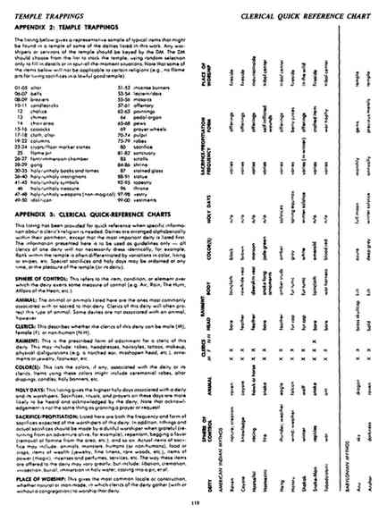

附录二：神庙陈设 · Appendix II: Temple Trappings
下表列出本书某些神祇的神庙中可能出现的典型物品，作为有代表性的样本。神庙中的信徒或侍从应由地下城主另行编定。地下城主应从表中选择物品布置神庙；随机选择只用于补充细节或临时应急。部分物品不适用于某些宗教，例如守序善良神庙不会有焚烧活祭品的火坑。
神庙陈设百分骰表（；。00 表示 100。）
| d100 | 陈设 | 原文 |
|---|---|---|
| 01–05 | 祭坛 | altar |
| 06–07 | 钟 | bells |
| 08–09 | 火盆 | braziers |
| 10–11 | 烛台 | candlesticks |
| 12 | 圣杯 | chalice |
| 13 | 编钟、钟铃 | chimes |
| 14 | 唱诗班区 | choir area |
| 15–16 | 教士长衣 | cassocks |
| 17–18 | 祭坛布 | cloth, altar |
| 19–22 | 柱 | columns |
| 23–24 | 墓穴／地面墓标石 | crypts/floor marker stones |
| 25 | 火坑 | flame pit |
| 26–27 | 洗礼盆／浸礼室 | font/immersion chamber |
| 28–29 | 锣 | gong |
| 30–35 | 神圣／邪恶书籍与典籍 | holy/unholy books and tomes |
| 36–40 | 神圣／邪恶铭文 | holy/unholy inscriptions |
| 41–45 | 神圣／邪恶徽记 | holy/unholy symbols |
| 46 | 神圣／邪恶财宝 | holy/unholy treasure |
| 47–48 | 神圣／邪恶武器（非魔法） | holy/unholy weapons (non-magical) |
| 49–50 | 偶像／圣像 | idol/icon |
| 51–52 | 香炉 | incense burners |
| 53–54 | 诵经台／高台 | lectern/dais |
| 55–56 | 镶嵌画 | mosaics |
| 57–61 | 奉献物 | offertory |
| 62–63 | 绘画 | paintings |
| 64 | 脚踏风琴 | pedal organ |
| 65–68 | 教堂长椅 | pews |
| 69 | 转经轮 | prayer wheels |
| 70–74 | 讲道坛 | pulpit |
| 75–79 | 长袍 | robes |
| 80 | 祭品 | sacrifice |
| 81–82 | 圣所 | sanctuary |
| 83 | 卷轴 | scrolls |
| 84–86 | 神龛 | shrine |
| 87 | 彩色玻璃 | stained glass |
| 88–91 | 雕像 | statue |
| 92–95 | 挂毯 | tapestry |
| 96 | 宝座 | throne |
| 97–98 | 祭衣室 | vestry |
| 99–00 | 祭服 | vestments |
